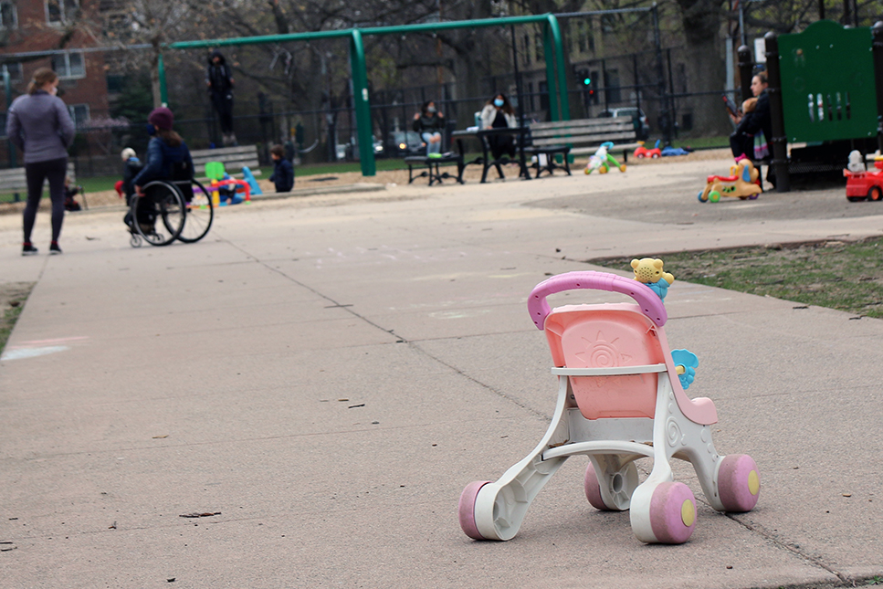

The Brookings Institute estimates that as many as 300,000 fewer children could be born in 2021 than in 2020. Overall, one in three U.S. women said they wanted to get pregnant later or have fewer children because of COVID-19, according to a Guttmacher Institute study.
The drop in the number of children born this year follows a steady decline of the U.S. fertility rates that has been going on for decades. With a sharp decrease driven by the 2008 recession, the fertility rates hit a record low in 2019. Then came the pandemic, bringing many people face-to-face with an uncertain future and forcing them to make tough decisions about pregnancy.
Birth Counts in States with 2021 Data
Molly, 30, works in recruitment and asked that her last name not be used because her family isn't aware of her circumstances. Her company cut her pay significantly in an attempt to prevent more layoffs after discharging one-third of the employees in late March last year.
Her husband lost a well-paid job after the restaurant where he worked closed. With the weight of the pandemic, worried over finances and losing the stable, job-guaranteed healthcare, he returned to drug use after 12 years of sobriety.
Molly immediately started questioning whether she should keep the baby when she discovered her pregnancy in December last year. They had wanted a second child so their school-aged daughter would have a sibling. Molly went off birth control at the end of February, right before the pandemic hit. “We thought [COVID-19] was going to be a short time,” said Molly. But it lasted longer than they had ever imagined.
Her husband’s relapse cemented her decision to terminate the pregnancy. “It just felt way too much … I felt like we were not in a place to really bring another person into our home,” said Molly.
On the day of the abortion, she arrived 30 minutes early at the doctor’s office. No one else was allowed to go in with her due to the virus. She put all her belongings in a locker, put on a hospital gown and was given anesthesia. When she regained consciousness, she was in the recovery room.
“I felt some relief, in the days after ... I did feel confident in the decision,” said Molly.

Photo By Szu Yu Chen
Many considered delaying pregnancy during the pandemic, according to the Guttmacher Institute study.
“A lot of the people that I have seen have been furloughed ... or have lost their jobs,” said Rebecca Joachim, director of Crisis Services at Boston Center for Pregnancy Choices, whose clients are mostly from lower income groups that have been struggling with financial burdens exacerbated by the pandemic.
From the beginning of the pandemic, Blacks and Latinos have faced unemployment rates significantly higher than whites. In the first quarter of 2020, Blacks had an unemployment rate of 6.3%, while Latino workers were at 4.8% and whites at 3.1%. Black and Latina women have seen jobs come back at a slower rate than white women.
“These inequities are really profound in Black and Latino people in terms of COVID exposure and pre-term birth. So it's really just one thing on top of another thing for these women,” said Laura Jelliffe-Pawlowski, the lead researcher for an international study focused on how COVID-19 is affecting those pregnant and giving birth. “We've had several women say they had to choose between keeping their baby safe and having a job, or saying they had to decide between having enough food for their family or exposing their fetus to infection.”
Percentage of women reporting
wanting to delay childbearing or have fewer kids
Dashanna Hanlon, a doula serving mostly people of color, has seen an increase in clients asking for a payment plan or discounts. She joined virtual meetings with other doulas to propose offering free support. “We say who can take someone in July? This person really needs someone for free. It's that kind of thing,” said Hanlon.
Before making the decision, Molly shared her struggles on an online forum. Her post resulted in numerous messages bombarding her mailbox. Some even called her "monster."
"I didn't realize that was going to happen … [Parenting] is hard work. If you're dealing with somebody else who is causing you stress like drugs or your job isn't going well, it's going to come out in your parenting." said Molly.
Financial insecurities, loss of job-guaranteed healthcare, student loan debts and the hostility Molly received when she shared her struggles eroded her faith in the system that could have been more supportive.
"This is a big reason why millennials do not have children,” said Molly. “Millennials have been saying for a long time that we want help in these areas and we haven't gotten it. Now we write a post about possibly having an abortion and it's our fault. We're bad people.”
A project by Szu Yu Chen, Sofia Perez and Ryan Corbin.